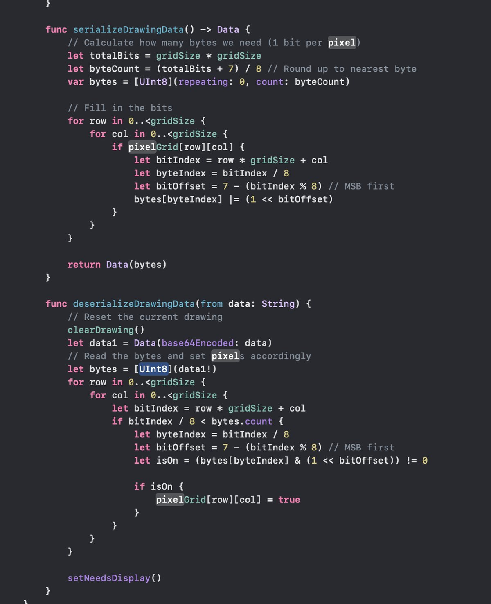
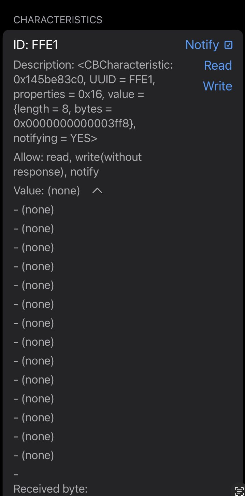
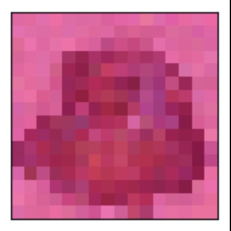
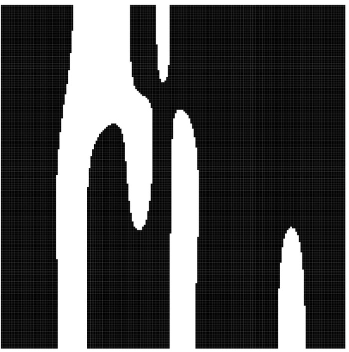
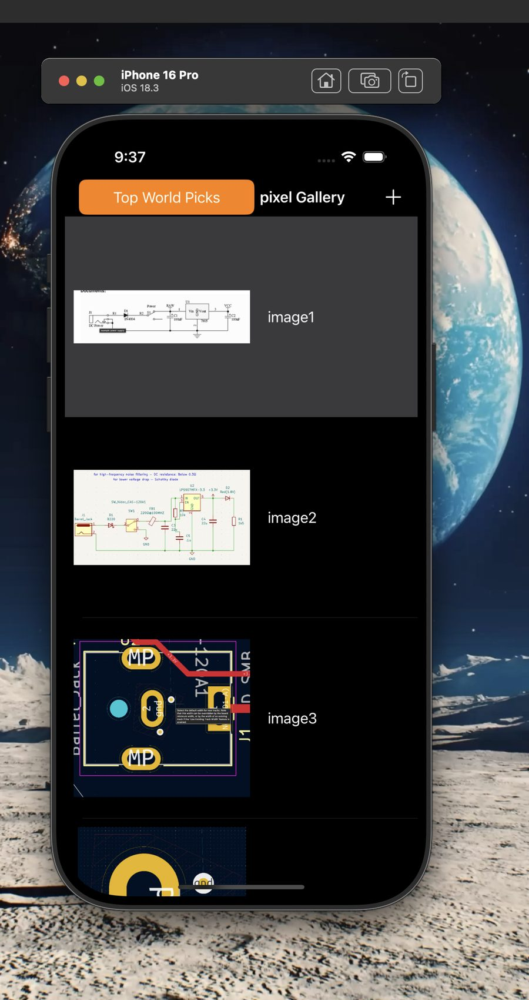

- What it is
- A pixel-art editor, gallery, and generator — drawn on the phone, generated by a model, transmitted to a BLE peripheral
- Three parts
- A diffusion model that generates sprites, a bit-packed BLE transport, and an authenticated gallery backend
- Hard part
- BLE gives you ~20 usable bytes per write. A naive grid encoding does not fit.
- Stack
- Swift/UIKit, CoreBluetooth, HM-10 serial module, denoising diffusion model, REST + token auth
1 — Getting a drawing small enough to send
The app draws on a square boolean grid: each cell is on or off. The obvious way to send that is one byte per pixel, or worse, JSON. Over BLE that is immediately fatal — the HM-10 exposes a serial characteristic with a payload measured in tens of bytes, so a naive encoding needs dozens of round trips per drawing.
Since every cell is a single bit of information, the encoding should be a single bit too. Packing eight pixels per byte cuts the payload by 8× and turns a multi-write transfer into something that fits in a handful of packets.

byteCount = (totalBits + 7) / 8
is the round-up-to-whole-bytes idiom; bitOffset = 7 − (bitIndex % 8) fills
each byte MSB-first so the wire order stays consistent in both directions.
- One bit per pixel.
bytes[byteIndex] |= (1 << bitOffset)sets a pixel; the reader tests the same bit with a mask. A 32×32 grid becomes 128 bytes instead of 1,024. - MSB-first, stated explicitly. Bit order is exactly the kind of thing that silently mirrors your image if the two sides disagree, so both functions compute the offset identically rather than relying on convention.
- Round up, don't truncate.
(totalBits + 7) / 8matters when the grid isn't a multiple of eight — integer division alone would drop the final partial byte and clip the last row. - Base64 on the way back in, because the return path is a JSON string field rather than raw bytes.
- Bounds-checked on receive. The deserialiser tests
bitIndex / 8 < bytes.countbefore every read, so a short or truncated packet renders a partial drawing instead of crashing the app.
2 — Talking to the HM-10

FFE1, properties 0x16, notifications enabled,
and the received byte count printing live.
The HM-10 presents a single serial characteristic, FFE1, inside service
FFE0. Everything moves through that one pipe in both directions, so the app
acts as a CoreBluetooth central: scan, connect, discover, subscribe, write.
- Write without response is what the
0x16property mask allows, and it's what you want here — waiting for an acknowledgement per packet would dominate transfer time on a link this small. - Notify for the return path. The peripheral pushes bytes back rather than being polled, which is why
notifying = YESis the state worth checking first when nothing arrives. - Building the inspector was the debugging tool. Printing the characteristic's UUID, properties, and value length in-app is what turned "it doesn't work" into a specific question about which of those three was wrong.
3 — The diffusion model
The generation side is a denoising diffusion probabilistic model trained on small pixel sprites. Diffusion learns to reverse a noising process: add Gaussian noise to training images over many steps, then train a network to undo one step at a time, so sampling starts from pure noise and walks back to an image.


What that failure output actually told me
The model was generating at a resolution far finer than the pixel art it was supposed to produce, so it learned smooth gradients and curved boundaries — the exact features pixel art doesn't have. The output isn't low-quality sprite art; it's high-quality art of the wrong kind.
That distinction is the useful one. It says the training loop and the sampler are working correctly and the problem is upstream in how the data and the output grid were sized — a much cheaper fix than debugging a model that's genuinely failing to learn.
4 — Gallery and accounts

- Two feeds, one list. A public gallery and the signed-in user's own, so the same view code serves both and only the endpoint changes.
- Token auth, persisted. Register and login return a token that's held in
UserDefaultsand attached to subsequent requests, so the session survives an app restart. - Every image carries an ID, which is what lets a gallery entry be updated or deleted rather than only appended — the difference between a feed and an editor.
What I took from it
- The transport dictates the data structure. One bit per pixel isn't a clever optimisation; it's the encoding the link's byte budget forces. Designing the format after picking BLE would have meant rewriting it.
- Build the inspector before you need it. Surfacing UUID, properties, and byte counts in-app converted a silent failure into a readable one.
- Read failure output for its structure, not its quality. Smooth blobs meant "right model, wrong resolution," which pointed at the data pipeline instead of the network.